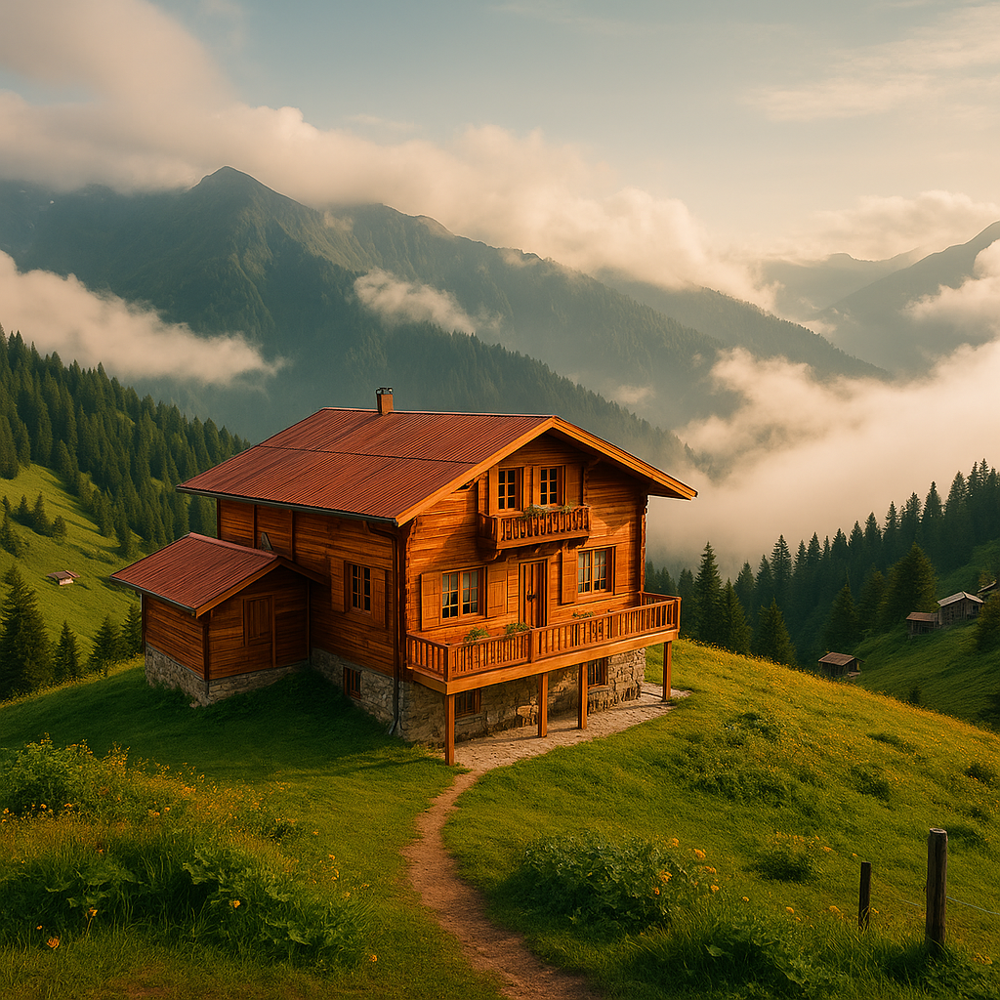

Pokut Yaylası’ndaki Butik Otelimiz 🏡✨

Karadeniz’in en büyüleyici köşelerinden biri olan Rize – Pokut Yaylası’nda, doğanın huzuruyla iç içe tasarlanmış butik otelimize hoş geldiniz. Deniz seviyesinden yaklaşık 2.000 metre yükseklikte, bulutların üstünde adeta bir masal dünyasında misafirlerimizi ağırlıyoruz. Ahşap mimarinin sıcaklığıyla bezenmiş odalarımızda sabah uyandığınızda göreceğiniz manzara, hayatınız boyunca unutamayacağınız bir deneyim olacak.